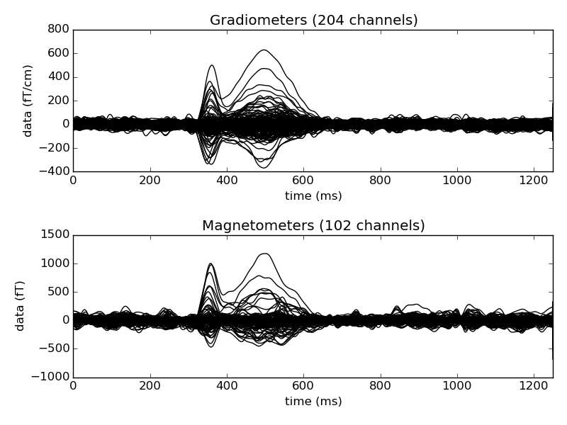

MEGSIM single trial simulation dataset¶
The MEGSIM consists of experimental and simulated MEG data which can be useful for reproducing research results.
The MEGSIM files will be dowloaded automatically.
The datasets are documented in: Aine CJ, Sanfratello L, Ranken D, Best E, MacArthur JA, Wallace T, Gilliam K, Donahue CH, Montano R, Bryant JE, Scott A, Stephen JM (2012) MEG-SIM: A Web Portal for Testing MEG Analysis Methods using Realistic Simulated and Empirical Data. Neuroinformatics 10:141-158
Script output:
Read a total of 3 projection items:
PCA-v1 (1 x 102) active
PCA-v2 (1 x 102) active
PCA-v3 (1 x 102) active
Reading /data1/agramfort/work/src/mne-python/examples/MEGSIM/megsim/simdata_singleTrials/sim6_trial_001.fif ...
Read a total of 3 projection items:
PCA-v1 (1 x 102) active
PCA-v2 (1 x 102) active
PCA-v3 (1 x 102) active
Found the data of interest:
t = 0.00 ... 1249.60 ms (Average to trigger # 23)
0 CTF compensation matrices available
nave = 1 - aspect type = 100
Projections have already been applied. Setting proj attribute to True.
No baseline correction applied...
Read a total of 3 projection items:
PCA-v1 (1 x 102) active
PCA-v2 (1 x 102) active
PCA-v3 (1 x 102) active
Reading /data1/agramfort/work/src/mne-python/examples/MEGSIM/megsim/simdata_singleTrials/sim6_trial_002.fif ...
...
Python source code: plot_megsim_data_single_trial.py
from mne import read_evokeds
from mne.datasets.megsim import load_data
print(__doc__)
condition = 'visual' # or 'auditory' or 'somatosensory'
# Load experimental RAW files for the visual condition
epochs_fnames = load_data(condition=condition, data_format='single-trial',
data_type='simulation', verbose=True)
# Take only 10 trials from the same simulation setup.
epochs_fnames = [f for f in epochs_fnames if 'sim6_trial_' in f][:10]
evokeds = [read_evokeds(f)[0] for f in epochs_fnames]
mean_evoked = sum(evokeds[1:], evokeds[0])
# Visualize the average
mean_evoked.plot()
Total running time of the example: 2 seconds